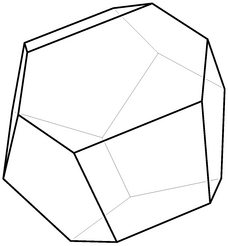
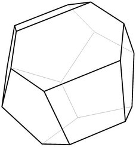

{kind=link}
{kind=link}
{kind=link}
{kind=link}
{kind=link}
{kind=link}
{kind=link}
{kind=link}
{kind=link}
{kind=link}
{kind=link}
{kind=link}
{kind=link}
{kind=link}
{kind=link}
{kind=link}
![[264x281 greyscale PNG, 9KB]](faces10.png) 

by Simon Tatham, mathematician and programmer
Some time around 1993, I went for a university interview. In the waiting room, I met another guy who was waiting for an interview, and we got talking. He said that at school he had recently been doing a project on buckminsterfullerene, the strange polyhedral form of carbon in which sixty carbon atoms combine into the shape of a truncated icosahedron. In particular, his chemistry teacher had been speculating about why this curious shape should form, and had conjectured that if you took 60 points on the surface of a sphere, caused them to mutually repel (while still constrained to the sphere's surface) and let them move to an equilibrium state, they might naturally form into the vertices of the buckminsterfullerene shape.
This struck me as a fun idea to play with, so when I went home I cooked up some simulation software and gave it a try. Unfortunately, although I was perfectly competent to write the code for the repelling points, I didn't do so well at writing code to visualise the result helpfully. I was left with a vague feeling that I didn't get the buckminsterfullerene shape, but I couldn't have usefully described what I did get.
More recently I was asked by a friend to see if I could produce a solid with seven faces, for use as a stage prop representing a seven-sided die. It occurred to me that an interesting way to construct a reasonably symmetric seven-faced solid might be to do the same trick again: constrain seven mutually repelling points to the surface of a sphere and let them find equilibrium, but instead of using them as the vertices of a polyhedron, draw a tangent plane to the sphere at each point and see what polyhedron those planes enclosed.
It's now been ten years since I originally experimented in this area, and now I'm much better at maths, so this time I've managed to do a proper job, and create software which can sensibly draw the actual polyhedra obtained by these techniques. So here are some interesting results and some pretty pictures on the web for everybody else to enjoy.
My 1993 attempt at this problem used an extremely simple technique to display the results. I simply projected my sphere on to a circle on the screen, and displayed the points in two distinct forms according to whether they were on the front or the back side. So for 60 points, it would have looked something like this:
From this diagram you can observe that the points are arranged in something like a triangular lattice, and deduce that therefore the solid depicted is probably not the buckminsterfullerene structure which is composed of pentagons and hexagons. But it's not easy, in general, to figure out what sort of polyhedron is represented by one of these diagrams; how about this one, with 13 points?
I know I couldn't stare at that set of points and work out what sort of polyhedron it would end up looking like. So I wrote some software to do the job for me. For those who are interested, I'll now describe the techniques I used; for everyone else, if you skip on to the next section there will be more pretty pictures :-)
To do this I began by drawing each face plane separately. I rotated the whole point set until one point was at the very top of the sphere, and then I computed the intersection lines of every other tangent plane with the horizontal one at the top. Then I simply generated PostScript which drew that set of intersecting lines on a page, so that the human viewer could easily pick out the central polygon in the middle of the mess. It typically looked something like this:
This represents one face of the 13-sided polyhedron generated from the above set of 13 points. Each face is numbered; the diagram shows the number of the face at the centre, and each intersection line is labelled with the number of the other plane involved. At the centre of the diagram is the actual desired polygon. In principle a full set of these diagrams should have been adequate to construct the desired polyhedron: simply print them all out, cut out the central polygon from each sheet, and glue them to each other in the manner indicated by the numeric labels shown around each face.
However, this seemed like far too much work; much better to simply generate a 3D model of the polyhedron and display it on the screen. In order to pick out the face boundary among all those crisscrossing lines, I notionally expanded a circle out from the centre point of the face until it touched a line. Then I knew that point on that line was part of the face boundary; so I then moved along that line until I encountered a crossing point with another line, then turned left on to that line and did the same thing again, and so on until I returned to where I'd started. This allowed me to end up with a clear definition of each polygonal face, and then I simply reversed the rotation which had brought one point to the top in order to put that face back in its proper place. Repeat for every point, and we have a model:
Finding convex hulls is a common topic in algorithms textbooks, and I'm sure there are highly efficient algorithms to do it very quickly and efficiently; but I knew the precise format of the output I wanted, I didn't know whether any existing algorithms would be easily adapted to produce that output even once I'd researched them, and in any case I thought it would be fun to figure it out for myself. So what I did was: for each pair of vertices, I rotated the sphere so that that pair was aligned along a vertical line, then I projected the whole point set into the horizontal plane so that my two points were mapped on to a single one. Then I sorted all the other points into order of angle from the fulcrum point, so that they were in the order you'd see them if you stood at the fulcrum and turned around slowly. Finally I examined that list of angles to see if there was a gap of size pi or greater; if so, that implied that a line could be drawn through my fulcrum point in such a way that all the other points were on the same side of it. In other words, this told me whether my fulcrum point was on the convex hull of the projected point set, which (returning to three dimensions) would be true if and only if the line between the two original points was part of the 3D convex hull.
This gave me the precise set of edges of the polyhedron I wanted. Now all I needed was to assemble those edges into faces. So you take an edge, you walk along it to a vertex, you look at all the other edges leaving that vertex, and you pick the one that allows you to turn left by the sharpest amount. Repeat until you get back to where you started, and you've circumnavigated a face. So once again we have now generated a 3D polyhedron model, in precisely the same form as the last one:
So, having written all this code, I then applied it to various numbers of points and produced some actual results.
Some obvious results you might expect to see would be the five Platonic solids. Some of these do in fact work the way you'd expect; applying the vertex construction to 4, 6 and 12 points does create a tetrahedron, an octahedron and an icosahedron:
And, of course, applying the face construction instead generates their duals. The tetrahedron's dual is another tetrahedron (not very interesting), but the other two generate a cube and a dodecahedron:
Where it gets interesting is that although doing the face construction on six points produces a cube, doing the vertex construction on eight doesn't. Instead we get a more interesting solid:
What's happened here is that instead of the points arranging themselves at the corners of a cube, they have "discovered" that by twisting one end of the cube 45 degrees relative to the other one, they can end up slightly further apart. So instead of a cube, we end up with a square antiprism: a square at each end, four triangles connecting edges of the top square to corners of the bottom one, and four more triangles connecting edges of the bottom square to corners of the top one.
This phenomenon illustrates what seems to be a general principle of the vertex construction: faces bigger than a triangle appear not to be stable. A square face, for example, will buckle into two triangles wherever it can; pentagons and hexagons are unheard of. (The two square faces at the ends of the solid shown above are actually the only case, in all of the examples I tried, in which a non-triangular face appears at all.)
So this is why the vertex construction cheerfully produced a tetrahedron, an octahedron and an icosahedron: they're the three platonic solids which are made of nice stable triangles. The cube doesn't work because it's made of squares, and so we would expect the dodecahedron not to work either. And, indeed, when we apply the vertex construction to 20 points, we get this:
Far from a nice clean dodecahedron with twelve large flat pentagonal faces, we instead see a complete mess: an irregular solid composed of 36 triangles. And in fact this continues to be the case for larger and larger numbers of points. In particular, applying the vertex construction to 60 points gives a solid which is nothing at all like the truncated icosahedron structure of buckminsterfullerene:
With its structure composed of rigid triangles, in fact, it seems to me that this solid is actually rather more reminiscent of Buckminster Fuller's geodesic dome structures than the molecule named after him is!
But that's enough of vertices. These vast expanses of triangles get quite boring after a while; you get some much more attractive-looking solids from the face construction, using each of the source points as the centre of a polyhedron face.
One of the initial motivations for this work was to find a reasonably symmetric seven-sided polyhedron. So given all this, it was the work of a moment to construct a point set of size 7, apply the face construction, and produce ...
... a total disappointment! There are apparently no interesting solids with seven faces; instead all we get is a terribly boring pentagonal prism.
Some slightly larger numbers give some more interesting results. Here are the solids with 9, 10 and 11 faces:
The 9-face solid is quite pretty in particular, I think. It's most easily visualised by imagining two tetrahedra glued together by one face, then squashed down into a fairly flat dipyramid. Then this dipyramid has been truncated at each of the three sharpest corners to produce a solid with six pentagons and three rhombi.
Finally, one last curiosity. I have shown above that sixty points on a sphere do not naturally converge into the vertices of the buckminsterfullerene truncated icosahedron. However, if we apply the face construction to 32 points, we get this:
This is the truncated icosahedron! Or something very close to it, anyway. The hexagons on this solid are not quite regular; this is because of the constraint that all the faces of a solid created in this way have to be tangent to the same inscribed sphere. This is not true of the regular truncated icosahedron, in which the perpendicular distance from a face to the centre is different for the pentagonal and hexagonal faces. So although this solid is totally unstable in terms of vertices and nothing even close to it is generated by the vertex construction, it does turn out to be a natural choice for the face construction.
Here you can download the source code for all the software I used to generate these pictures, and also a program which generates nets for constructing of all the above polyhedra out of cardboard.
My own code is written in basic core Python, so it should run equally happily on Linux or Unix, Windows, or any other operating system which can run Python. (I've only tested it on Linux.) I did all the linear algebra myself the old-fashioned way without using any Python extensions, so these programs should run happily on any Python installation at all.
In addition to Python, you might need some other software to make sense of the results:
pnmcrop program from the
Netpbm
package, and the convert program from the
ImageMagick
package.
Here is the archive itself, in Unix .tar.gz format:
polyhedra.tar.gz
For details of how to use the various programs in the archive, see the file called README.
{kind=link}
{kind=link}